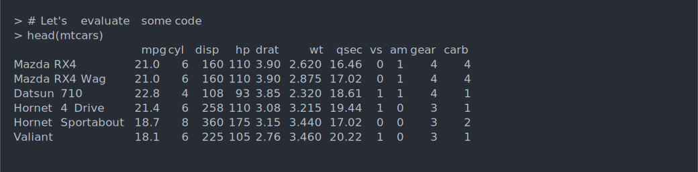
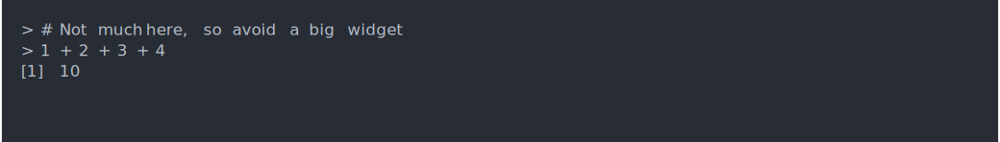
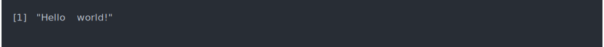
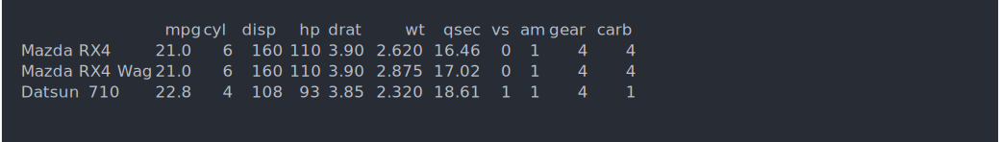
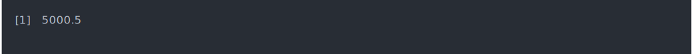

Example
This is an example vignette for creating asciinema screen casts. To include a screencast in your document, you need to do two steps. The first is to initialize the asciicast engine:
```{r echo = FALSE, results = "hide", purl = FALSE}
asciicast::init_knitr_engine()
```After this, for the chunks that you want to display in an asciinema player, use the asciicast engine:
```{asciicast}
# This will be an ascii cast
# Let's evaluate some code
head(mtcars)
```This will produce the following cast:

Changing parameters
You can include a DCF header in the asciicast, to set some parameters, e.g. the height of the widget.
```{asciicast}
#' Rows: 5
# No much here, so avoid a big widget
1 + 2 + 3 + 4
```
Caching
Recording the asciinema casts might take long, as everything happens in real time. You can tell knitr to cache the results, as long as the code of the chunk is unchanged. E.g. the previous chunk with caching looks like this:
```{asciicast cache = TRUE}
#' Rows: 5
# Not much here, so avoid a big widget
1 + 2 + 3 + 4
```Casting a script from a file
It is possible to read the R code of a cast from a file, instead of specifying it in the code chunk. The advantage of this is that it is easier to use the code in the R scripts for other purposes.
```{asciicast code = readLines("../inst/examples/hello.R")}
```
Using SVG files
Sometimes the asciinema player widget cannot be used, because custom JavaScript code is forbidden on the page. A common example is README (and other) markdown files on GitHub. acsiicast can also use animated SVG images instead of the asciinema player HTML widget. For this set the asciicast_knitr_svg option to TRUE, or the ASCIICAST_KNITR_SVG environment variable to TRUE. (The former takes precedence if both are set.)
options(asciicast_knitr_svg = TRUE)```{asciicast}
#' Rows: 3
cli::rule(center = "TITLE", line = "~-", line_col = "blue")
```
You can also use SVG files to show still screenshots, with the state of the screen after running the R code.
```{asciicast}
#' Rows: 3
#' At: end
#' Window: FALSE
#' Padding: 10
#' Cursor: FALSE
cli::rule(center = "TITLE", line = "~-", line_col = "blue")
```
Showing the code
By default asciicast code chunks do not show the code, i.e. the echo kntr option is set to FALSE for them. You can override this locally for a code chunk, or globally, by supplying the echo argument to asciicast::init_knitr_engine().
```{asciicast echo = TRUE}
#' Rows: 5
#' At: end
# This code will be shown
head(mtcars, 3)
```This will show the code above the SVG image. The header is not shown:
# This code will be shown
head(mtcars, 3)
cpp11 integration
Use the asciicastcpp11 knitr engine to compile cpp11 functions in the asciicast subprocess:
```{asciicastcpp11}
double mean_cpp(doubles x) {
int n = x.size();
double total = 0;
for (double value : x) {
total += value;
}
return total / n;
}
```Then you can use these functions in regular asciicast chunks:
```{asciicast}
mean_cpp(1:10000*1.0)
```